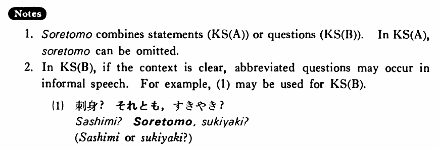

それとも (B. 421)
- (ksa).
- この本が間違っているか（それとも）私が間違っているかどちらだ・です。
- It's either that this book is wrong or that I am wrong.
- (ksb).
- 刺身を食べますか。それともすき焼きにしますか。
- Will you have sashimi, or will you have sukiyaki?
- (a).
- 僕が来るか（それとも）村井さんが来るかどちらかです。
- Either I will come or Mr. Murai will come.
- (b).
- あの人は先生ですか。それとも医者ですか。
- Is he a teacher or a doctor?
